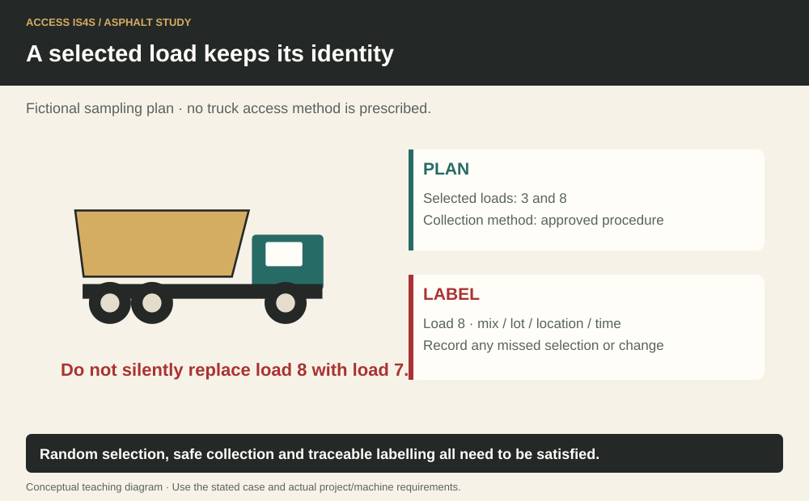

Study chapter · Outline E3
Determine haul truck samples
A truck sample connects the delivered mixture to a production and quality record. The truck, load ticket, mix identifier, time and sampled location must remain traceable. Sampling should answer the planned question; choosing only the easiest or coolest-looking portion can introduce bias. Safe access is established before sampling, not improvised after a truck arrives.
Learning step 1
Mix sampling
Confirm the intended material and sampling purpose: mixture identity, temperature, binder-content/gradation testing or another specified property. Use the required sampling location, increments, tools and sample size under the approved method. The arrangement must control vehicle movement, hot material, access and other exposed people. Do not climb a load or reach into a discharge stream on the strength of a classroom description.
Temperature and laboratory specimens may require different handling. The sampling record identifies exactly what was taken, where, when and by whom. A result is compared with the correct formula and contractual criterion, not simply with the last truck’s appearance.
A selected load keeps its identity

Learning step 2
Quality control
Random selection reduces the opportunity to choose favourable loads or locations, while the approved plan determines the sampling population and timing. Random does not mean unplanned or unsafe. The testing agency/company personnel must have the required competence and authorization, and the truck/paver crew must understand the hold and communication arrangement.
Keep quality-control sampling separate from owner acceptance/audit sampling where the contract distinguishes them. A failed result is handled through the documented process, preserving the selected sample and records. Replacing it with an unrecorded convenient sample defeats traceability and can hide a production problem.
Learning step 3
Bag samples
Use the container or bag specified for the sample’s material, temperature, quantity and test. Identify the load, mix, date/time, location, sampler, intended test and any required seal/backup identification. Protect the sample from contamination and loss while following safe hot-material handling. An ordinary classroom bag may be unsuitable for actual hot mix.
A backup sample is useful only if it remains correctly identified, preserved and handled under the applicable method and retention arrangement. Record transfer and receipt. If a seal breaks or the label becomes unreadable, report the condition rather than recreating identity from memory.
Keep the sample and its record together

Try it and explain your thinking
Explain and apply the idea
Prepare the complete label and transfer record for fictional load 3, mix JMF-C revision 2, sampled at 10:25 for binder/gradation testing. Mark any information the case does not supply.
Skills you use: Reading, Writing.
Two fictional increments are 6.2 kg and 5.8 kg
Two fictional increments are 6.2 kg and 5.8 kg. Find total mass and explain why this sum alone cannot establish a representative or correctly reduced laboratory sample.
Skills you use: Numeracy, Problem solving, Communication.
Communicate and verify the work
Create a digital sampling log, introduce the delayed-load change with a partner and preserve the authorized decision trail.
Skills you use: Digital, Collaboration, Adaptability, Creativity and innovation.
Show the skill in supervised practice
Machine/model/serial or classroom case: __________ · Manual/procedure and revision: __________ · Date/location: __________ · Learner/observer: __________
Record each criterion as 0—not yet demonstrated, 1—with task-solving support, or 2—independently under the stated conditions. Mark unobserved criteria separately; do not convert missing opportunity into a zero. The assessor determines the required repeat practice and applicable qualification requirements. A critical failure means hold, correction and reassessment regardless of the numerical result. Use safe simulations for classroom reasoning; actual operation requires the selected equipment, approved conditions and competent supervision.
| What the observer checks | Result | Evidence |
|---|---|---|
| Critical: Safe access, surroundings and communication maintained. | Pass / hold | Observation: __________________ |
| Critical: Required energy, heat, movement and public-access controls maintained for the actual task. | Pass / hold | Observation: __________________ |
| Instructor establishes actual vehicle separation, access, tools, containers and sampling method with the competent testing role. | 0 / 1 / 2 | Evidence/help: ________________ |
| Observe representative sampling from authorized locations, identification, safe handling and backup/transfer procedure. | 0 / 1 / 2 | Evidence/help: ________________ |
| Record practical evidence from the actual task; paper labels alone do not demonstrate hot-mix sampling skill. | 0 / 1 / 2 | Evidence/help: ________________ |
Actual conditions and support: __________________________
Feedback, next practice and authorized release/status: __________________________
Sources and further reading
- SkilledTradesBC. (2016). Asphalt Paving/Laydown Technician program outline, E3, printed p. 46; source PDF pp. 48–48.
- Asphalt Institute. (2007). The asphalt handbook (7th ed., MS-4), Chapter 10: Quality Control and Acceptance of Hot Mix Asphalt; source PDF pp. 479–552. Open publication.
- BC Ministry of Transportation and Transit. (2025). 2025 Standard Specifications for Highway Construction, Volume 2. Open publication.
- WorkSafeBC. (Web snapshot: October 30, 2026). OHS Regulation, Part 16: Mobile Equipment. Open publication.
Figure-specific pages, editions and original contributors are credited beside each image. Current project requirements and the matching machine instructions determine practical use.